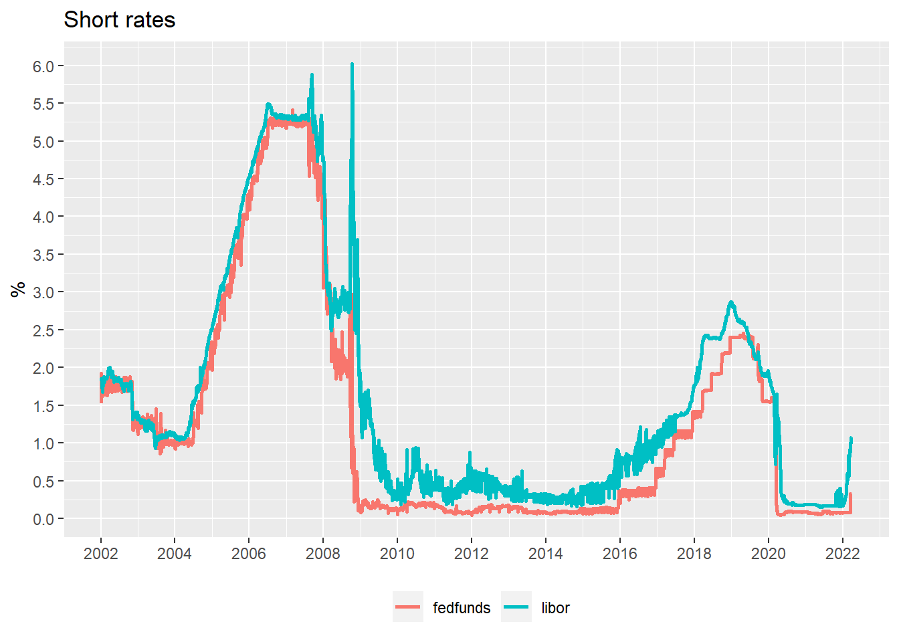

Monetary Policy Path
Dr. Paulo Gustavo Grahl, CFA
2022-03-24
Last updated: 2022-03-30
Checks: 7 0
Knit directory: lpm/
This reproducible R Markdown analysis was created with workflowr (version 1.7.0). The Checks tab describes the reproducibility checks that were applied when the results were created. The Past versions tab lists the development history.
Great! Since the R Markdown file has been committed to the Git repository, you know the exact version of the code that produced these results.
Great job! The global environment was empty. Objects defined in the global environment can affect the analysis in your R Markdown file in unknown ways. For reproduciblity it’s best to always run the code in an empty environment.
The command set.seed(20220204) was run prior to running the code in the R Markdown file. Setting a seed ensures that any results that rely on randomness, e.g. subsampling or permutations, are reproducible.
Great job! Recording the operating system, R version, and package versions is critical for reproducibility.
Nice! There were no cached chunks for this analysis, so you can be confident that you successfully produced the results during this run.
Great job! Using relative paths to the files within your workflowr project makes it easier to run your code on other machines.
Great! You are using Git for version control. Tracking code development and connecting the code version to the results is critical for reproducibility.
The results in this page were generated with repository version 9f338c7. See the Past versions tab to see a history of the changes made to the R Markdown and HTML files.
Note that you need to be careful to ensure that all relevant files for the analysis have been committed to Git prior to generating the results (you can use wflow_publish or wflow_git_commit). workflowr only checks the R Markdown file, but you know if there are other scripts or data files that it depends on. Below is the status of the Git repository when the results were generated:
Ignored files:
Ignored: .Rhistory
Ignored: .Rproj.user/
Untracked files:
Untracked: analysis/old-monetary-policy-path.Rmd
Untracked: analysis/us-inflation-forecast.Rmd
Untracked: analysis/us-inflation-simulation.Rmd
Untracked: analysis/us-treasury-flows.Rmd
Untracked: code/create_futures_table.R
Untracked: code/download_mspd.R
Untracked: code/download_public_debt.R
Untracked: code/eurodollar_eda.R
Untracked: code/fed-soma2.R
Untracked: code/fed_soma_holdings.R
Untracked: code/plot_cpi_charts.R
Untracked: code/prepare_eurodollar_data.R
Untracked: code/prepare_fedfunds_data.R
Untracked: data/20220216-Fed-Soma_holdings.csv
Untracked: data/eurodollar.rds
Untracked: data/fedfunds.rds
Untracked: data/figure2-original-paper.png
Untracked: data/mspd/
Untracked: delmelater.Rmd
Untracked: output/ed_spread_table.rds
Untracked: output/fed_holdings_timeseries.png
Untracked: output/fed_treasury_wam.png
Untracked: output/ff_spread_table.rds
Untracked: output/mspd_processed/
Untracked: output/old-ff_spread_table.rds
Untracked: output/treasury_maturities_annual.png
Untracked: output/treasury_maturities_monthly.png
Untracked: output/x_ed_spread_table.rds
Untracked: output/x_ff_spread_table.rds
Untracked: tmp.csv
Unstaged changes:
Modified: code/README.md
Modified: data/README.md
Note that any generated files, e.g. HTML, png, CSS, etc., are not included in this status report because it is ok for generated content to have uncommitted changes.
There are no past versions. Publish this analysis with wflow_publish() to start tracking its development.
Introduction
This short note explains some alternatives to extract the expected path of monetary policy from the fed funds and eurodollar futures.
Fed funds futures
The value of a fed fund contract expiring \(i\) months ahead is linked to the average of the effective overnight fed funds during the calendar month of expiration.
Eurodollar futures
The value of an eurodollar contract with an expiration \(i\) quarters ahead is linked to the 3-month Libor rate observed on the expiration date.
Fed funds vs Eurodollar
The difference between a 3-month Libor and rolling over funds in the overnight fed funds rate is called basis risk. Since Libor rates include credit risk, this basis risk is not constant.
The chart does not include the most recent 3 months of data. Below, another look at the chart by removing periods where the basis exceeds 1 percent.
Below the table showing a summary statistic, where one can see that the median basis risk is around 0.19 percentage points.
basis_risk
Min. :-0.22777
1st Qu.: 0.09297
Median : 0.18646
Mean : 0.28593
3rd Qu.: 0.34406
Max. : 5.59328 If we restrict the sample to start in 2010 we obtain a median basis risk of around 0.23 percentage points.
basis_risk
Min. :-0.005625
1st Qu.: 0.157656
Median : 0.233720
Mean : 0.280935
3rd Qu.: 0.365781
Max. : 1.588615 If we restrict the sample to start in 2015 we obtain a median basis risk of around 0.26 percentage points.
basis_risk
Min. :-0.005625
1st Qu.: 0.124883
Median : 0.260889
Mean : 0.302090
3rd Qu.: 0.397813
Max. : 1.588615 Basic formulas
Futures rates in fed funds and eurodollar contracts can be expressed as the sum of the expected future level of the underlying interest rate and a risk premium:
\[ ff_t(i) = E_t\left[\bar{ff}(i)\right] + \rho^{ff}_t(i)\] \[ ed_t(i) = E_t\left[lib(i)\right] + \rho^{ed}_t(i)\]
For the eurodollar contract, one can also show it in terms of the expected fed funds rate by adding the expected basis risk.
\[ ed_t(i) = E_t\left[\bar{ff}(i)\right] + \rho^{lib}_t(i) + \rho^{ed}_t(i)\] where the expected basis risk is given by:
\[ \rho^{lib}_t(i) = E_t\left[lib(i) - \bar{ff}(i) \right]\]
What the formulas above show is that, both fed funds and eurodollar futures can be used to infer the expected path for fed funds rate once all the premia are taken into account.
Constant risk premia
If one assumes that (a) risk premia, for each contract tenor, is constant, and (b) expected changes in monetary policy have averaged zero over the sample period, then the expected path for fed funds rate can be obtained subtracting an estimate of the risk premia from the future rates.
On other words, if expectations errors average zero, the risk premia on each contract will be the average level of futures contracts relative to the level of the overnight fed funds rate.
The chart below shows this measure of risk premia, where the rate implied by each contract is shown at the middle of the period covered by that contract. There is some overlapping as the fed funds futures include up to the first five months while the eurodollar contracts included range from one to twenty quarters.
The chart also shows the period up to June 2002 to be compatible with the original paper, but extends to include the most recent period, also showing how the shape of the risk premia curve compares in recent periods.
Expected path
The chart below reproduces figure 2 in the original paper – showing the methodology adopted here, despite being updated to include future contracts after 2002, resulted in similar expected paths for the dates considered in the paper.
Problems with constant risk premia
One potential problem with the idea of a constant risk premia is that the historical risk curve is too steep. Even looking only at the sample after 2002, the risk premia for the 4-year contract is close to 200bp! – a high number given the current low terminal rate environment and the perception that rates do not have the same room to increase when compared to the history before 2008.
Below the implied expected path using the constant risk premia assumption for more recent periods:

As the chart above shows, such steep risk premia curve implies both (a) a too soon peak in the expected funds rate and (b) that expected rates will too often be negative – both aspects do not seem to resemble the reality in the markets.
Simple alternative
One possibility is to restrict the sample to calculate the risk premia to after 2015.

But even restricting the sample, one can see that the risk premia curve remains steep; but overall there is a reduction of around 25-50bp in the premia throughout the curve.
The chart below plots the expected path of fed funds rates using the risk premia curve calculated with data after 2015.
Variable risk premia
Part of the risk premia is due to basis risk - which varies sharply due to credit concerns (see previous chart). But to adjust for a variable basis risk we would need market pricing for basis risk into the future. While this market does exist (basis swap market), the paper mentions that it is not a liquid one (note: I have not checked to see whether that has changed).
One possibility is to assume that basis risk changes over time but is independent of the horizon of the futures contract, or \(\rho^{lib}_t(i) = c_t\). The table below shows that, on average, the basis spread does not depend on the horizon of the contract - therefore the hypothesis seems reasonable.
In this case, the slope of the term structure of futures contracts on any given day would reflect either (a) monetary policy expectations or (b) the other components of risk premia \(\rho^{ff}_t(i)\) and \(\rho^{ed}_t(i)\). This components of the risk premia will depend on the horizon of the contract (\(i\)).
Identification assumption: expected path of monetary policy levels out within a four year horizon.
The chart below plots the slope of the eurodollar curve between years 4 and 5, expressed in basis points per month (risk premia).
The term premia ranges are shown below:
term_premia
Min. :-0.3332
1st Qu.: 1.1308
Median : 1.7935
Mean : 2.3858
3rd Qu.: 3.3858
Max. : 7.7607 And below the term premia ranges since 2015:
term_premia
Min. :-0.3332
1st Qu.: 0.8226
Median : 1.4608
Mean : 1.4553
3rd Qu.: 1.8975
Max. : 3.8922 The chart below shows some recent examples of the term structure of the eurodollar future rates. It is clear that often the far end of the curve has an upward sloping shape, reflecting the term premia.
One factor model
The table below summarizes the basis statistics since 2015. It is a narrow range up to 2 years, which supports the idea of using a constant basis over this time horizon.
basis
Min. :0.2031
1st Qu.:0.2216
Median :0.2319
Mean :0.2369
3rd Qu.:0.2532
Max. :0.2939 One can then subtract the median basis and obtain and adjusted eurodollar contract:
Average term premia since 2015 (\(s_t\)):
Table below shows the statistics of the term premia since 2015:
term_premia
Min. :-0.3332
1st Qu.: 0.8226
Median : 1.4608
Mean : 1.4553
3rd Qu.: 1.8975
Max. : 3.8922 One possible model, then, is to assume that the slope of the futures curve is proportional to the term premia:
\[ \rho_t^{ff}(i) = \beta^{ff}(i) \times s_t \\ \rho_t^{ed}(i) = \beta^{ed}(i) \times s_t \]
where \(\beta(i)\) are the factor loadings, which are time invariant.
The factor loadings are then calculated by dividing the adjusted average shape of the eurodollar futures by the average term factor (slope factor, \(s_t\)).
Fed funds expectation
Under the structure of the risk premia assumed, rates on eurodollar futures with expiration 4 and 5 years will be:
\[ fut_t^{ed}(4y) = ff_t^* + c_t + \beta^{ed}(4y).s_t \\ fut_t^{ed}(5y) = ff_t^* + c_t + (1+\beta^{ed}(4y)).s_t \]
Now, to infer what is the expected fed funds two-years ahead one can build a portfolio which is long one unit of 2y, long \(\beta^{ed}(2y)\) units of 4y and short \(\beta^{ed}(2y)\) units of 5y:
\[ fut_t^{ed}(2y) + \beta^{ed}(2y)\left[ fut_t^{ed}(4y) - fut_t^{ed}(5y) \right] = \\ = fut_t^{ed}(2y) - \beta^{ed}(2y).s_t \\ = fut_t^{ed}(2y) - \rho_t^{ed}(2y) \\ = E_t\left[\bar{ff}(2y)\right] + c_t \]
So the result of this portfolio is the expected fed funds plus basis risk. The chart below plots this:
Zoom: we can see that current expected fed funds are close to the peak in late 2018… BUT with a different inflation environment (so real rates not as high as 2018).
Expected policy rate under time-varying and constant risk premia.
Deviation from long-run level
Another alternative is to consider a long position of one unit of \(fut_t^{ed}(2y)\) and \(\beta^{ed}(4y)-\beta^{ed}(2y)\) units of \(fut_t^{ed}(5y)\) and a short position of \(1 + \beta^{ed}(4y)-\beta^{ed}(2y)\) units of \(fut_t^{ed}(4y)\). The value of this portfolio is:
\[ fut_t^{ed}(2y)-\left(1+\beta^{ed}(4y) - \beta^{ed}(2y)\right).fut_t^{ed}(4y) + \left(\beta^{ed}(4y) - \beta^{ed}(2y)\right).fut_t^{ed}(5y) = \\ fut_t^{ed}(2y) - fut_t^{ed}(4y) + \beta^{ed}(2y)(fut_t^{ed}(4y) - fut_t^{ed}(5y)) -\beta^{ed}(4y)(fut_t^{ed}(4y)-fut_t^{ed}(5y) = \\ fut_t^{ed}(2y) - fut_t^{ed}(4y) - \beta^{ed}(2y).s_t + \beta^{ed}(4y).s_t = \\ fut_t^{ed}(2y) - fut_t^{ed}(4y) - \rho_t^{ed}(2y) + \rho_t^{ed}(4y) = \\ fut_t^{ed}(2y) - \rho_t^{ed}(2y) - (fut_t^{ed}(4y)-\rho_t^{ed}(4y)) = \\ E_t\left[\bar{ff}(2y)\right] + c_t - (ff_t^* - c_t) = \\ E_t\left[\bar{ff}(2y)\right] - ff_t^* \]
In words, the value of this portfolio is the expected deviation of fed funds rate from its long-run level, or a measure of the stance of monetary policy.
Zoom:
Miscellaneous
R version 4.1.2 (2021-11-01)
Platform: x86_64-w64-mingw32/x64 (64-bit)
Running under: Windows 10 x64 (build 19044)
Matrix products: default
locale:
[1] LC_COLLATE=English_United States.1252
[2] LC_CTYPE=English_United States.1252
[3] LC_MONETARY=English_United States.1252
[4] LC_NUMERIC=C
[5] LC_TIME=English_United States.1252
attached base packages:
[1] stats graphics grDevices utils datasets methods base
other attached packages:
[1] forcats_0.5.1 stringr_1.4.0 purrr_0.3.4 readr_2.1.2
[5] tidyverse_1.3.1 fable_0.3.1 feasts_0.2.2 fabletools_0.3.2
[9] tsibbledata_0.4.0 tsibble_1.1.1 ggplot2_3.3.5 lubridate_1.8.0
[13] tidyr_1.2.0 dplyr_1.0.8 tibble_3.1.6 fpp3_0.4.0
[17] workflowr_1.7.0
loaded via a namespace (and not attached):
[1] httr_1.4.2 sass_0.4.1 jsonlite_1.8.0
[4] warp_0.2.0 modelr_0.1.8 bslib_0.3.1
[7] assertthat_0.2.1 getPass_0.2-2 distributional_0.3.0
[10] highr_0.9 cellranger_1.1.0 yaml_2.3.5
[13] lattice_0.20-45 pillar_1.7.0 backports_1.4.1
[16] glue_1.6.2 digest_0.6.29 promises_1.2.0.1
[19] rvest_1.0.2 colorspace_2.0-3 htmltools_0.5.2
[22] httpuv_1.6.5 pkgconfig_2.0.3 broom_0.7.12
[25] haven_2.4.3 scales_1.1.1 processx_3.5.3
[28] slider_0.2.2 whisker_0.4 later_1.3.0
[31] tzdb_0.3.0 git2r_0.30.1 generics_0.1.2
[34] farver_2.1.0 ellipsis_0.3.2 withr_2.5.0
[37] cli_3.2.0 magrittr_2.0.3 crayon_1.5.1
[40] readxl_1.4.0 evaluate_0.15 ps_1.6.0
[43] fs_1.5.2 fansi_1.0.3 anytime_0.3.9
[46] xml2_1.3.3 tools_4.1.2 hms_1.1.1
[49] lifecycle_1.0.1 munsell_0.5.0 reprex_2.0.1
[52] callr_3.7.0 compiler_4.1.2 jquerylib_0.1.4
[55] rlang_1.0.2 grid_4.1.2 rstudioapi_0.13
[58] rappdirs_0.3.3 labeling_0.4.2 rmarkdown_2.13
[61] gtable_0.3.0 DBI_1.1.2 R6_2.5.1
[64] zoo_1.8-9 knitr_1.38 fastmap_1.1.0
[67] utf8_1.2.2 rprojroot_2.0.2 stringi_1.7.6
[70] Rcpp_1.0.8.3 vctrs_0.4.0 dbplyr_2.1.1
[73] tidyselect_1.1.2 xfun_0.30